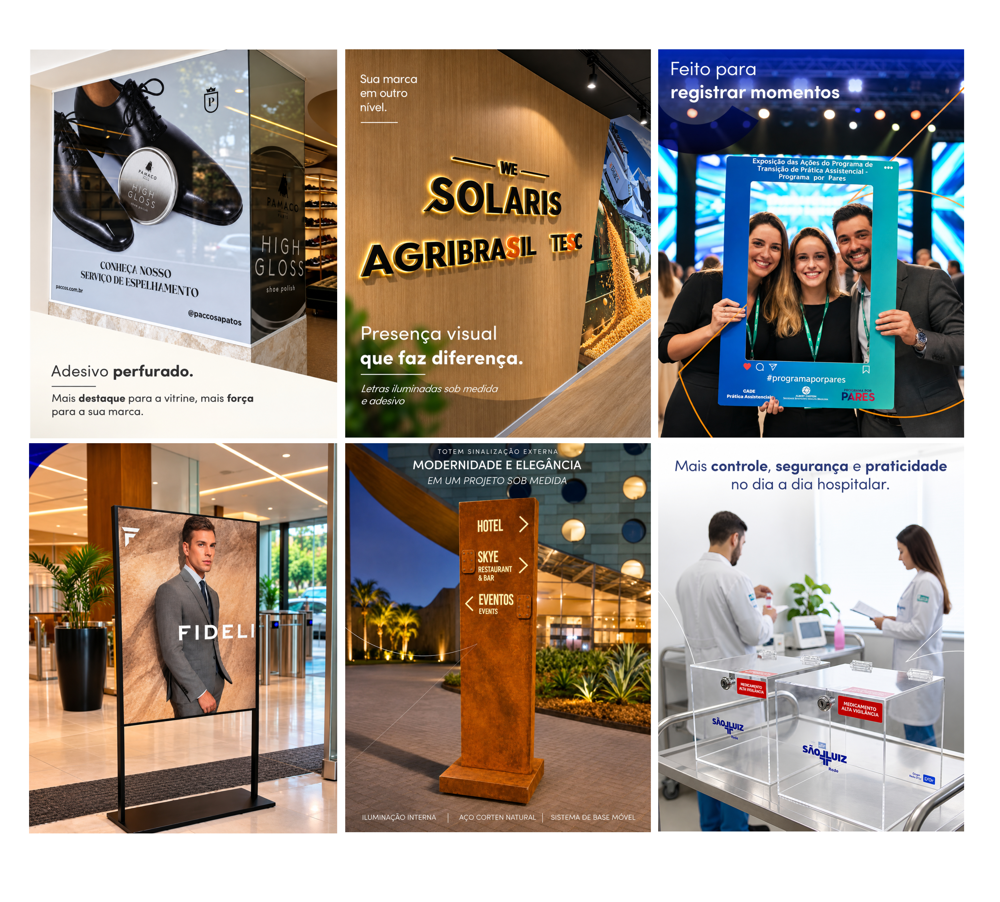

REDES SOCIAIS.
Desenvolvimento de peças gráficas para comunicação digital, criando composições alinhadas à identidade visual da empresa e adaptadas aos diferentes conteúdos publicados nas redes sociais.

O PROJETO.
O projeto reúne diferentes peças gráficas desenvolvidas para a comunicação da Sign Cut nas redes sociais.
Cada arte foi construída considerando o conteúdo, a identidade visual da empresa e a necessidade de apresentar produtos e serviços de maneira clara e visualmente atrativa.
DESIGN PARA
COMUNICAÇÃO DIGITAL.
Desenvolvimento das peças gráficas
Criação de composições e layouts
Adaptação dos conteúdos à identidade visual
Preparação das artes para publicação
PROCESSO.
O desenvolvimento das peças partia do conteúdo que precisava ser comunicado, buscando uma composição visual que valorizasse a informação sem perder a identidade da marca.
Os layouts foram trabalhados com variações de hierarquia, imagens, tipografia e elementos gráficos, mantendo uma linguagem coerente entre as diferentes publicações.
IDENTIDADE
EM CADA PEÇA.
O conjunto de peças mantém uma comunicação visual consistente, permitindo apresentar diferentes conteúdos sem perder a unidade gráfica da marca.